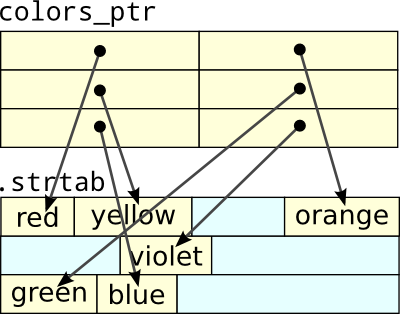

<link rel="stylesheet" href="./css/main.css" class="theme"/>
<link rel="stylesheet" href="./css/print.css" class="theme"/>
<link rel="stylesheet" href="./css/syntax.css" class="theme"/>

<main>
    <article class="single">
        <h2><a href="a.html">An Array of Pointers vs. a Multidimensional Array</a></h2>

        <p>In a C program, suppose I have a table of color names of similar
            length. There are two straightforward ways to construct this table.
            The most common would be an array of <code class="highlighter-rouge">char *</code>.</p>

        <div class="language-c highlighter-rouge"><pre class="highlight"><code><span class="kt">char</span> <span class="o">*</span><span class="n">colors_ptr</span><span class="p">[]</span> <span class="o">=</span> <span class="p">{</span>
            <span class="s">"red"</span><span class="p">,</span>
            <span class="s">"orange"</span><span class="p">,</span>
            <span class="s">"yellow"</span><span class="p">,</span>
            <span class="s">"green"</span><span class="p">,</span>
            <span class="s">"blue"</span><span class="p">,</span>
            <span class="s">"violet"</span>
            <span class="p">};</span>
        </code></pre>
        </div>

        <p>The other is a two-dimensional <code class="highlighter-rouge">char</code> array.</p>

        <div class="language-c highlighter-rouge"><pre class="highlight"><code><span class="kt">char</span> <span class="n">colors_2d</span><span class="p">[][</span><span class="mi">7</span><span class="p">]</span> <span class="o">=</span> <span class="p">{</span>
            <span class="s">"red"</span><span class="p">,</span>
            <span class="s">"orange"</span><span class="p">,</span>
            <span class="s">"yellow"</span><span class="p">,</span>
            <span class="s">"green"</span><span class="p">,</span>
            <span class="s">"blue"</span><span class="p">,</span>
            <span class="s">"violet"</span>
            <span class="p">};</span>
        </code></pre>
        </div>

        <p>The initializers are identical, and the syntax by which these tables
            are used is the same, but the underlying data structures are very
            different. For example, suppose I had a lookup() function that
            searches the table for a particular color.</p>

        <div class="language-c highlighter-rouge"><pre class="highlight"><code><span class="kt">int</span>
            <span class="nf">lookup</span><span class="p">(</span><span class="k">const</span> <span class="kt">char</span> <span class="o">*</span><span class="n">color</span><span class="p">)</span>
            <span class="p">{</span>
            <span class="kt">int</span> <span class="n">ncolors</span> <span class="o">=</span> <span class="k">sizeof</span><span class="p">(</span><span class="n">colors</span><span class="p">)</span> <span class="o">/</span> <span class="k">sizeof</span><span class="p">(</span><span class="n">colors</span><span class="p">[</span><span class="mi">0</span><span class="p">]);</span>
            <span class="k">for</span> <span class="p">(</span><span class="kt">int</span> <span class="n">i</span> <span class="o">=</span> <span class="mi">0</span><span class="p">;</span> <span class="n">i</span> <span class="o">&lt;</span> <span class="n">ncolors</span><span class="p">;</span> <span class="n">i</span><span class="o">++</span><span class="p">)</span>
            <span class="k">if</span> <span class="p">(</span><span class="n">strcmp</span><span class="p">(</span><span class="n">colors</span><span class="p">[</span><span class="n">i</span><span class="p">],</span> <span class="n">color</span><span class="p">)</span> <span class="o">==</span> <span class="mi">0</span><span class="p">)</span>
            <span class="k">return</span> <span class="n">i</span><span class="p">;</span>
            <span class="k">return</span> <span class="o">-</span><span class="mi">1</span><span class="p">;</span>
            <span class="p">}</span>
        </code></pre>
        </div>

        <p>Thanks to array decay — array arguments are implicitly converted to
            pointers (§6.9.1-10) — it doesn’t matter if the table is <code class="highlighter-rouge">char
colors[][7]</code> or <code class="highlighter-rouge">char *colors[]</code>. It’s a little bit misleading because
            the compiler generates different code depending on the type.</p>

        <h3 id="memory-layout">Memory Layout</h3>

        <p>Here’s what <code class="highlighter-rouge">colors_ptr</code>, a <em>jagged array</em>, typically looks like in
            memory.</p>

        <p></p>

        <p>The array of six pointers will point into the program’s string table,
            usually stored in a separate page. The strings aren’t in any
            particular order and will be interspersed with the program’s other
            string constants. The type of the expression <code class="highlighter-rouge">colors_ptr[n]</code> is <code class="highlighter-rouge">char *</code>.</p>

        <p>On x86-64, suppose the base of the table is in <code class="highlighter-rouge">rax</code>, the index of the
            string I want to retrieve is <code class="highlighter-rouge">rcx</code>, and I want to put the string’s
            address back into <code class="highlighter-rouge">rax</code>. It’s one load instruction.</p>

        <div class="language-nasm highlighter-rouge"><pre class="highlight"><code><span class="k">mov</span>   <span class="n">rax</span><span class="p">,</span> <span class="err">[</span><span class="n">rax</span> <span class="o">+</span> <span class="n">rcx</span><span class="o">*</span><span class="mi">8</span><span class="err">]</span>
        </code></pre>
        </div>

        <p>Contrast this with <code class="highlighter-rouge">colors_2d</code>: six 7-byte elements in a row. No
            pointers or addresses. Only strings.</p>

        <p></p>

        <p>The strings are in their defined order, packed together. The type of
            the expression <code class="highlighter-rouge">colors_2d[n]</code> is <code class="highlighter-rouge">char [7]</code>, an array rather than a
            pointer. If this was a large table used by a hot function, it would
            have friendlier cache characteristics — both in locality and
            predictability.</p>

        <p>In the same scenario before with x86-64, it takes two instructions to
            put the string’s address in <code class="highlighter-rouge">rax</code>, but neither is a load.</p>

        <div class="language-nasm highlighter-rouge"><pre class="highlight"><code><span class="k">imul</span>  <span class="n">rcx</span><span class="p">,</span> <span class="n">rcx</span><span class="p">,</span> <span class="mi">7</span>
            <span class="k">add</span>   <span class="n">rax</span><span class="p">,</span> <span class="n">rcx</span>
        </code></pre>
        </div>

        <p>In this particular case, the generated code can be slightly improved
            by increasing the string size to 8 (e.g. <code class="highlighter-rouge">char colors_2d[][8]</code>). The
            multiply turns into a simple shift and the ALU no longer needs to be
            involved, cutting it to one instruction. This looks like a load due to
            the LEA (Load Effective Address), but it’s not.</p>

        <div class="language-nasm highlighter-rouge"><pre class="highlight"><code><span class="k">lea</span>   <span class="n">rax</span><span class="p">,</span> <span class="err">[</span><span class="n">rax</span> <span class="o">+</span> <span class="n">rcx</span><span class="o">*</span><span class="mi">8</span><span class="err">]</span>
        </code></pre>
        </div>

        <h3 id="relocation">Relocation</h3>

        <p>There’s another factor to consider: relocation. Nearly every process
            running on a modern system takes advantage of a security feature
            called Address Space Layout Randomization (ASLR). The virtual address
            of code and data is randomized at process load time. For shared
            libraries, it’s not just a security feature, it’s essential to their
            basic operation. Libraries cannot possibly coordinate their preferred
            load addresses with every other library on the system, and so must be
            relocatable.</p>

        <p>If the program is compiled with GCC or Clang configured for position
            independent code — <code class="highlighter-rouge">-fPIC</code> (for libraries) or <code class="highlighter-rouge">-fpie</code> + <code class="highlighter-rouge">-pie</code> (for
            programs) — extra work has to be done to support <code class="highlighter-rouge">colors_ptr</code>. Those
            are all addresses in the pointer array, but the compiler doesn’t know
            what those addresses will be. The compiler fills the elements with
            temporary values and adds six relocation entries to the binary, one
            for each element. The loader will fill out the array at load time.</p>

        <p>However, <code class="highlighter-rouge">colors_2d</code> doesn’t have any addresses other than the address
            of the table itself. The loader doesn’t need to be involved with each
            of its elements. Score another point for the two-dimensional array.</p>

        <p>On x86-64, in both cases the table itself typically doesn’t need a
            relocation entry because it will be <em>RIP-relative</em> (in the <a href="http://eli.thegreenplace.net/2012/01/03/understanding-the-x64-code-models">small code
            model</a>). That is, code that uses the table will be at a fixed
            offset from the table no matter where the program is loaded. It won’t
            need to be looked up using the Global Offset Table (GOT).</p>

        <p>In case you’re ever reading compiler output, in Intel syntax the
            assembly for putting the table’s RIP-relative address in <code class="highlighter-rouge">rax</code> looks
            like so:</p>

        <div class="language-nasm highlighter-rouge"><pre class="highlight"><code><span class="c">;; NASM:</span>
            <span class="k">lea</span>    <span class="n">rax</span><span class="p">,</span> <span class="err">[</span><span class="n">rel</span> <span class="n">address</span><span class="err">]</span>
            <span class="c">;; Some others:</span>
            <span class="k">lea</span>    <span class="n">rax</span><span class="p">,</span> <span class="err">[</span><span class="n">rip</span> <span class="o">+</span> <span class="n">address</span><span class="err">]</span>
        </code></pre>
        </div>

        <p>Or in AT&amp;T syntax:</p>

        <pre><code class="language-gas">lea    address(%rip), %rax
        </code></pre>

        <h3 id="virtual-memory">Virtual Memory</h3>

        <p>Besides (trivially) more work for the loader, there’s another
            consequence to relocations: Pages containing relocations are not
            shared between processes (except after fork()). When loading a
            program, the loader doesn’t copy programs and libraries to memory so
            much as it memory maps their binaries with copy-on-write semantics. If
            another process is running with the same binaries loaded (e.g.
            libc.so), they’ll share the same physical memory so long as those
            pages haven’t been modified by either process. Modifying the page
            creates a unique copy for that process.</p>

        <p>Relocations modify parts of the loaded binary, so these pages aren’t
            shared. This means <code class="highlighter-rouge">colors_2d</code> has the possibility of being shared
            between processes, but <code class="highlighter-rouge">colors_ptr</code> (and its entire page) definitely
            does not. Shucks.</p>

        <p>This is one of the reasons why the Procedure Linkage Table (PLT)
            exists. The PLT is an array of function stubs for shared library
            functions, such as those in the C standard library. Sure, the loader
            <em>could</em> go through the program and fill out the address of every
            library function call, but this would modify lots and lots of code
            pages, creating a unique copy of large parts of the program. Instead,
            the dynamic linker <a href="https://www.technovelty.org/linux/plt-and-got-the-key-to-code-sharing-and-dynamic-libraries.html">lazily supplies jump addresses</a> for PLT
            function stubs, one per accessed library function.</p>

        <p>However, as I’ve written it above, it’s unlikely that even <code class="highlighter-rouge">colors_2d</code>
            will be shared. It’s still missing an important ingredient: const.</p>

        <h3 id="const">Const</h3>

        <p>They say <a href="/blog/2016/07/25/">const isn’t for optimization</a> but, darnit, this
            situation keeps coming up. Since <code class="highlighter-rouge">colors_ptr</code> and <code class="highlighter-rouge">colors_2d</code> are both
            global, writable arrays, the compiler puts them in the same writable
            data section of the program, and, in my test program, they end up
            right next to each other in the same page. The other relocations doom
            <code class="highlighter-rouge">colors_2d</code> to being a local copy.</p>

        <p>Fortunately it’s trivial to fix by adding a const:</p>

        <div class="language-c highlighter-rouge"><pre class="highlight"><code><span class="k">const</span> <span class="kt">char</span> <span class="n">colors_2d</span><span class="p">[][</span><span class="mi">7</span><span class="p">]</span> <span class="o">=</span> <span class="p">{</span> <span class="cm">/* ... */</span> <span class="p">};</span>
        </code></pre>
        </div>

        <p>Writing to this memory is now undefined behavior, so the compiler is
            free to put it in read-only memory (<code class="highlighter-rouge">.rodata</code>) and separate from the
            dirty relocations. On my system, this is close enough to the code to
            wind up in executable memory.</p>

        <p>Note, the equivalent for <code class="highlighter-rouge">colors_ptr</code> requires two const qualifiers,
            one for the array and another for the strings. (Obviously the const
            doesn’t apply to the loader.)</p>

        <div class="language-c highlighter-rouge"><pre class="highlight"><code><span class="k">const</span> <span class="kt">char</span> <span class="o">*</span><span class="k">const</span> <span class="n">colors_ptr</span><span class="p">[]</span> <span class="o">=</span> <span class="p">{</span> <span class="cm">/* ... */</span> <span class="p">};</span>
        </code></pre>
        </div>

        <p>String literals are already effectively const, though the C
            specification (unlike C++) doesn’t actually define them to be this
            way. But, like setting your relationship status on Facebook, declaring
            it makes it official.</p>

        <h3 id="its-just-micro-optimization">It’s just micro-optimization</h3>

        <p>These little details are all deep down the path of micro-optimization
            and will rarely ever matter in practice, but perhaps you learned
            something broader from all this. This stuff fascinates me.</p>
        
    </article>

</main>
